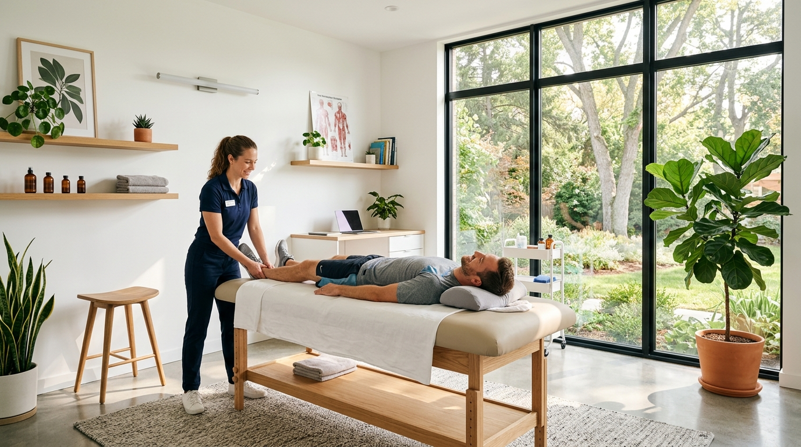
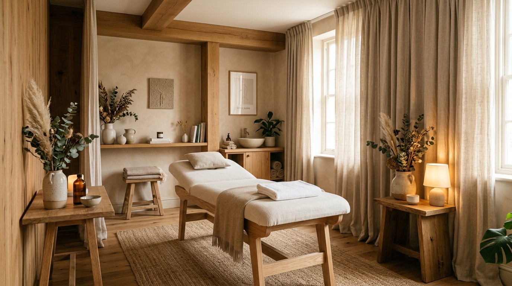
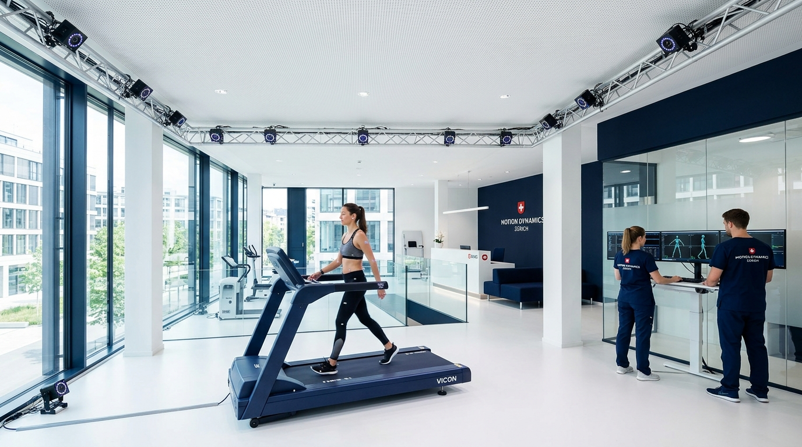
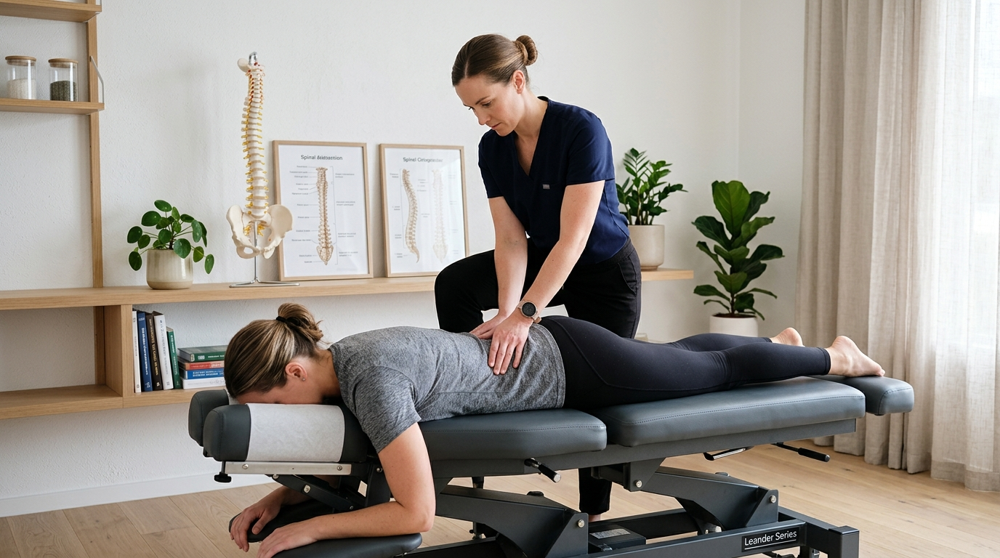
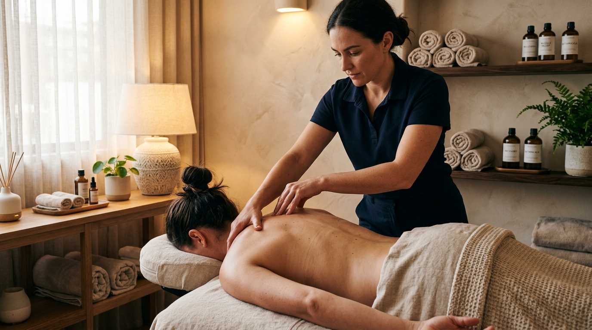
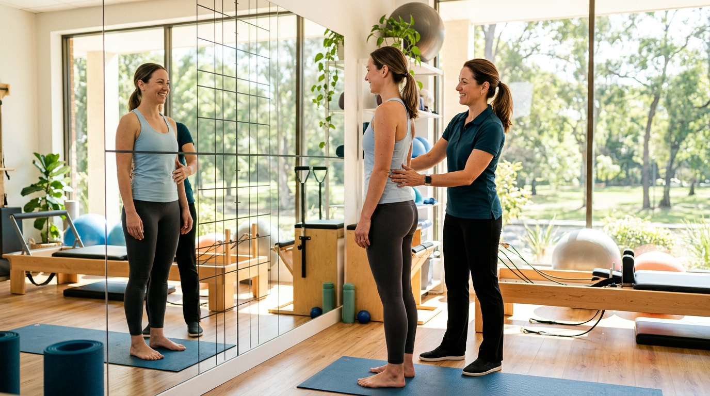

5 Praxis-Klassiker (Etablierte Schwerpunkte)
Solide, vertrauensvolle Webseiten für typische Fachrichtungen in Deutschland.

Bio & Organisch1. UNVERKRAMPFT.
Forest & SandEntspannte, evidenzbasierte Physiotherapie ohne Fließband-Gefühl. Warme Naturtöne, Sand & Waldgrün.
🎯 Highlight: Interaktiver Beschwerde-Kompass mit 30s-Atemreset
🩺 Rezept-Check: 28-Tage-Fristenrechner für Kassenrezepte
 Sport & Reha Lab
Sport & Reha Lab
2. KINETIQ LAB
Dark Carbon & CyanHigh-Performance Sportphysiotherapie für Athleten und Läufer. Vald ForceDecks Kraftmessplatten & Biomechanik.
🎯 Highlight: Return-to-Sport Readiness Calculator
⚡ Tech-Lab: 240fps High-Speed Laufanalyse & Cryo-Lounge

Ganzheitlich & Natur3. SANA VITA
Eukalyptus & ClayOsteopathie, Craniosacral und ganzheitliche Heilung. 60 Minuten individuelle Behandlungszeit in ruhigen Eichenholzräumen.
🎯 Highlight: Interaktiver Körperketten- & Schmerzursachen-Check
🌿 Philosophie: 3 Säulen: Parietal, Viszeral & Craniosacral

Schweizer Klinik-Präzision4. AURORA MED
Clinical Navy & AzureEvidenzbasierte Rehabilitation und Ultraschalldiagnostik nach ISO 9001. Direkte Schnittstelle zu überweisenden Fachärzten.
🎯 Highlight: Leitlinien-Navigator nach ICD-10 Diagnosen
📑 Standard: 4-Phasen Stufenschema & Facharztberichte in 24h
 Urban & Desk-Worker
Urban & Desk-Worker
5. VITALWERK
Charcoal & AmberCity-Praxis für Schreibtischtäter, Nackenverspannungen und Haltung. Termine von 07:00 bis 21:00 Uhr direkt an der U-Bahn.
🎯 Highlight: Desk-Worker Symptom-Decoder mit Sofort-Hacks
🏢 Signature: 30-Min. Office-Reset & Workspace-Ergonomie-Check
Bereit für kreative Konzepte?
Die 6 weiteren Vorlagen unten brechen bewusst mit Standard-Praxis-Mustern für maximale Wiedererkennung.
Zu den 6 Kreativ-Konzepten ↓6 Kreative Differenzierungs-Konzepte (aus konzepte.md)
Ausgefallene Metaphern, mutige Visuals und innovative Interaktionen.
 Arthrose & Mobilität
Arthrose & Mobilität
6. GELENK-SCHMIERE
Gold & Slatecore„Damit es wieder wie geschmiert läuft.“ Knorpel- und Arthrose-Zentrum mit viskosen Fluid-Effekten und 4-Stufen-Schmierplan.
💧 Interaktion: Flüssig-Modus Schalter mit goldenem Öltropfen-Canvas
⏱️ Tool: Interaktives Gelenk-Viskosimeter (Morgensteifigkeit)
 Faszien & Triggerpunkte
Faszien & Triggerpunkte
7. KNOTENLÖSER
Coral & Warm Stone„Wir lösen, was dich festhält.“ Spezialpraxis für chronische Myogelosen, verfilztes Bindegewebe und intramuskuläres Dry Needling.
🧵 Interaktion: Der rote Faden – Scroll-Faden entwirrt sich stufenlos
🎯 Tool: Knoten-Decoder mit Muskelketten-Referenzschmerz

Chirotherapie & Justierung8. KNACKPUNKT
Teal & Slate„Wieder im Lot.“ Spielerische Selbstironie: Wenn der befreiende Klick ertönt. High-Velocity-Low-Amplitude (HVLA) Impulse.
⚡ Interaktion: Subluxierte Boxen schnappen mit Web-Audio-Pop gerade!
🦴 Tool: Segment-Barometer für Atlas, HWS, BWS & ISG

Deep Tissue & KMT9. KNET & FERTIG
Claymorphism & Creme„Durchgeknetet. Erleichtert.“ Taktile, elastische 3D-Knetoptik für Menschen, denen sanftes Streicheln nicht mehr reicht.
💆 Interaktion: Squishy Claymorphism-Karten federn elastisch nach
🎚️ Tool: 4-Stufen Druckkonfigurator (bis Schmerzgrenze)

Haltung & Ergonomie10. AUFRECHT & HEITER
Sky Blue & Sunshine„Aufrecht stehen. Heiter leben.“ Haltung ist biomechanisch und mental. Vertikale Wirbelsäulenachse und §20-Prävention.
🦴 Interaktion: Dynamische Wirbelsäulen-Artikulation am Bildschirmrand
🪞 Tool: Digitaler Haltungs-Spiegel mit Korrekturtipp
 Sensomotorik & Neuro
Sensomotorik & Neuro
11. BEWEGUNGSMELDER
Midnight & Bioluminescent„Das Gehirn lernt neu.“ Neuro-Physiotherapie, Schlaganfall-Reha, Parkinson und Gangsicherheit durch aktive Neuroplastizität.
⚡ Interaktion: Glühende kinetische Maus-Spuren & interaktive Synapsen
⚖️ Tool: Propriozeptiver Gleichgewichts- & Schwindeltest
Das neue sticky Buchungs-Feature
In allen 11 Vorlagen ist das Terminbuchungs-Feature standardisiert als sticky Floating Action Button (unten rechts) integriert. Ein Klick öffnet das modale Panel (420 × 540 px), das künftig als iFrame oder Web Component von Praxen auf jeder beliebigen Website eingebunden werden kann.
<!-- Praxen binden künftig nur dieses Snippet ein -->
<script
src="https://cdn.termin-feature.de/widget.js"
data-praxis-id="muc-physio-80801"
data-theme="auto"
async>
</script>Das Skript rendert automatisch den schwebenden Kalender-Button und das optimierte 3-Schritt-Buchungsformular.